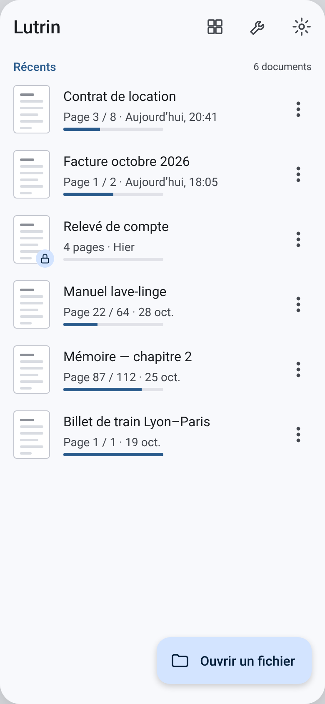
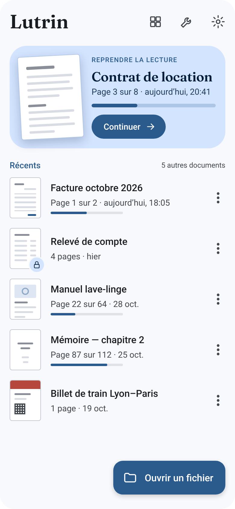
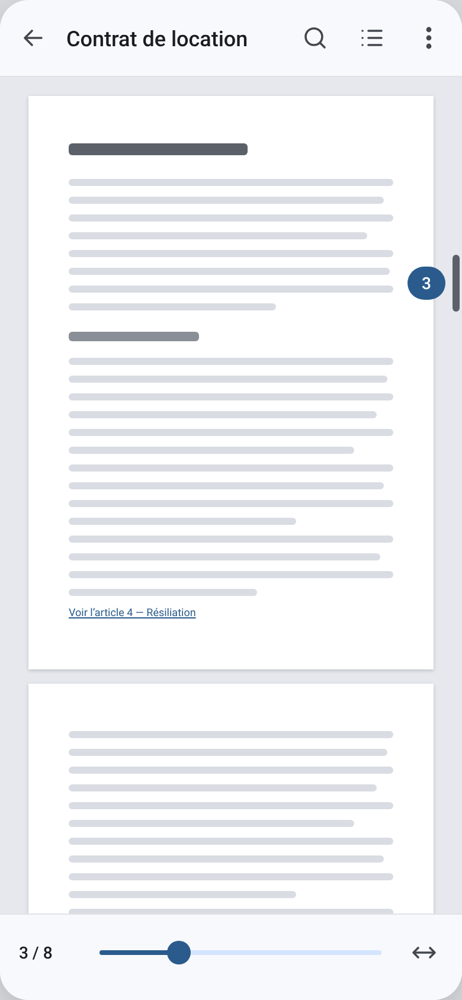
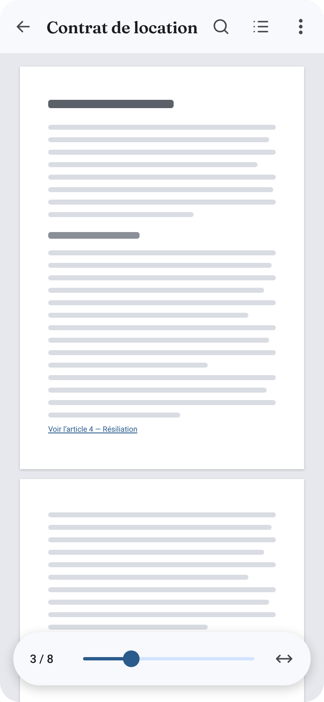
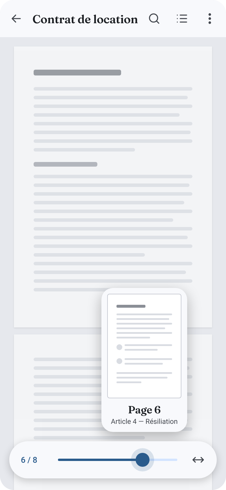
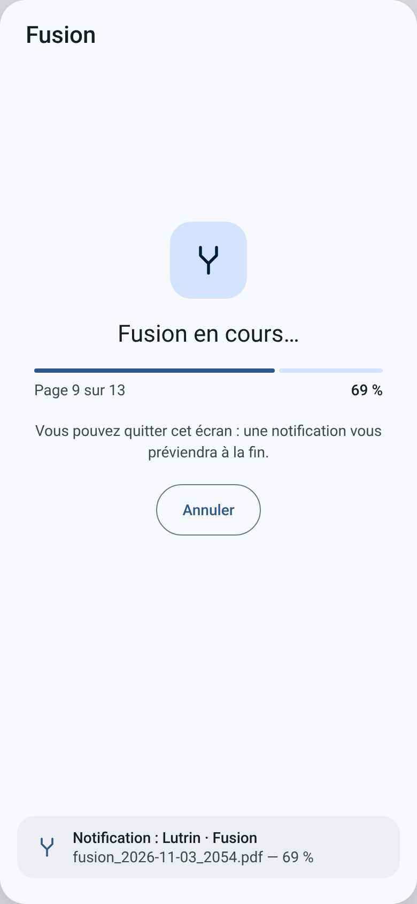
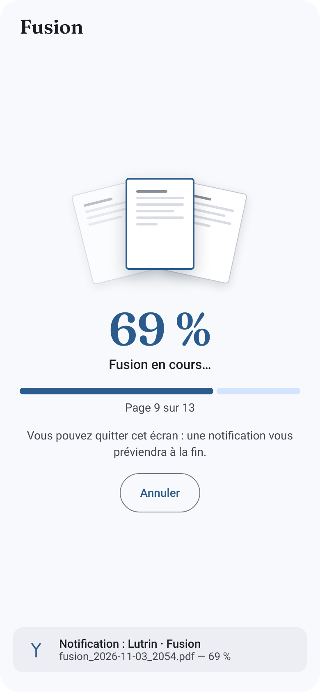
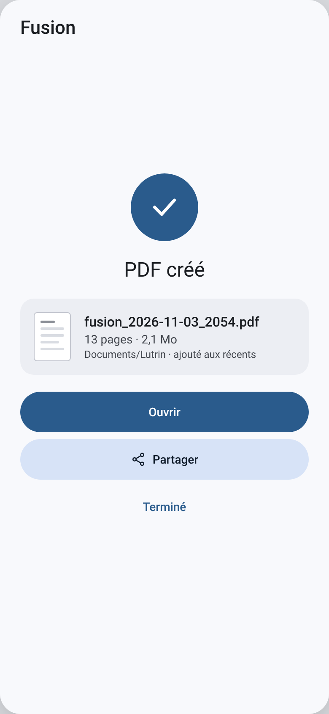
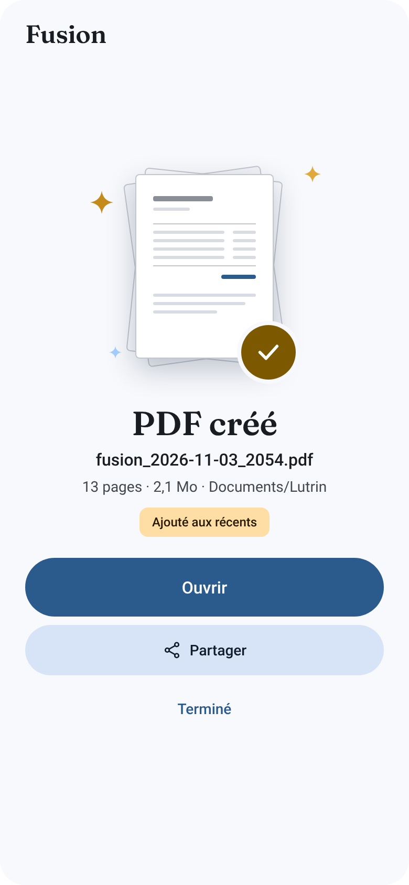

Propositions avant / après
Pistes de design pour E1, E2 et E9. Propositions non adoptées : les maquettes de référence restent celles de docs/design. Voir README.md.
E1 · Bibliothèque


- Carte « Reprendre la lecture » pour le dernier document, avec grande vignette.
- Titres en serif (Fraunces).
- Vignettes réelles plus grandes (52 × 68 dp).
- Barre de progression seulement pour une lecture en cours.
- Bouton « Ouvrir un fichier » en couleur primaire.
E2 · Lecteur



- Le document défile sous une barre flottante en pilule.
- Curseur fin à pouce rond, au lieu du curseur épais par défaut de Material 3.
- Pendant le glissement : aperçu de la page visée, numéro et titre de section.
- La bulle de défilement rapide disparaît (l'aperçu la remplace).
E9 · Opération en cours


- Les feuilles sources glissent sous la feuille centrale au fil de la progression.
- Pourcentage en grand, barre plus épaisse.
- Mêmes textes, même bouton « Annuler », même rappel de notification.
E9 · Résultat


- Première page du PDF créé en grand, posée sur les feuilles fusionnées.
- Accent chaud (rôle
tertiary) pour la pastille et « Ajouté aux récents ». - « Ouvrir » plus haut (56 dp) : c'est l'action attendue.